This guide provides a comprehensive list of all the weekly sources of Profession Knowledge Points in The War Within. If you want to make sure you're collecting every available point, this guide covers all the key sources.
I also have a separate guide for One-Time Knowledge Points, so be sure to check that out as well:
How Many Knowledge Points Can You Get Each Week?
The number of weekly Knowledge Points you can earn varies depending on your profession and the activities you complete. I've compiled all the details into a handy table that you can refer to.
As a general rule, every knowledge point earned will also reward you with 5 Artisan Acuity. For example, if you earn 15 Knowledge Points in a week, that's 75 Artisan Acuity points.
It looks like you can earn 8-12 profession knowledge every 3 or 4 days, and then you'll get another batch of 8-12. So, it's roughly 16-24 per week.
| Profession | Weekly Quest | Patron Crafting Orders | Treasure Drops | Treatises | Gathering | Weekly Total |
|---|---|---|---|---|---|---|
| Alchemy | 2 | 16 | 4 | 1 | - | 23 |
| Blacksmithing | 2 | 24 | 2 | 1 | - | 29 |
| Enchanting | 3 | - | 2 | 1 | * 9 | 15 |
| Engineering | 1 | 16 | 2 | 1 | - | 20 |
| Inscription | 2 | 24 | 4 | 1 | - | 31 |
| Jewelcrafting | 2 | 16 | 4 | 1 | - | 23 |
| Leatherworking | 2 | 24 | 2 | 1 | - | 29 |
| Tailoring | 2 | 24 | 2 | 1 | - | 29 |
| Herbalism | 3 | - | - | 1 | 9 | 13 |
| Mining | 3 | - | - | 1 | 8 | 12 |
| Skinning | 3 | - | - | 1 | 7 | 11 |
*Enchanters get their weekly knowledge from disenchanting items instead of Patron Crafting Orders.
Weekly Profession Quests
In The War Within, each profession, including Gathering professions, has only one weekly quest. For Gathering professions and Enchanting, this quest can be picked up from your profession trainer in the main city and typically involves turning in specific items. Completing this quest rewards three Knowledge Points.
For crafting professions, the weekly quest involves completing crafting orders. Most professions will earn two Knowledge Points from this, but Engineering only grants one Knowledge Point. You can pick up the crafting orders quests from Kala Clayhoof in Dornogal.
Patron Crafting Orders (NPC)
One of the largest sources of Knowledge Points for crafting professions is through Patron crafting orders (NPC crafting orders). Depending on your profession, you can earn 16 to 24 Knowledge Points per week from these orders.
Patron orders can be challenging because they often require specific recipes, meeting minimum quality requirements, and often using your own materials. The list of NPC orders is randomized for each player, so there will be times when you can't complete certain orders due to insufficient skill or missing recipes.
To access Crafting Orders:
- Head to your profession trainer in Dornogal, where you'll find the Crafting Table for each profession.
- Open your profession window.
- Click on the "Crafting Orders" tab at the bottom.
- Then, navigate to the "Patron Orders" tab at the top.
To quickly scan the list of orders, you can hover over the little golden chests to view the rewards. Look for the blue "Glimmer" items, as these indicate knowledge points.
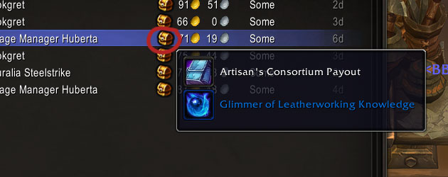
Treasure Drops
Each crafting profession has two treasure drops available every week, which can be found in the various treasure chests scattered across the world. These drops can provide either one or two Knowledge Points each, depending on your profession.
Hallowfall and the Ringing Deeps is the best place to farm these treasures because they are marked on your map. You will see them all over in these zones, for example: Machine Speaker's Reliquary, Arathi Treasure Hoard.
The drop rate is pretty high, so you can probably get these by just picking up treasures while you do your World Quests.
Tip: You can buy an 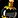
| Profession | Knowledge Item |
|---|---|
| Alchemy | 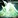 Alchemical Sediment,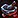 Deepstone Crucible |
| Blacksmithing | Coreway Billet, |
| Enchanting | 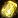 Crystalline Repository, Powdered Fulgurance |
| Engineering | Rust-Locked Mechanism, Earthen Induction Coil |
| Inscription | 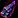 Striated Inkstone,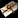 Wax-Sealed Records |
| Jewelcrafting | 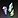 Diaphanous Gem Shards,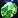 Deepstone Fragment |
| Leatherworking | 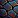 Stone-Leather Swatch, Sturdy Nerubian Carapace |
| Tailoring |
Gathering and Disenchanting
For Herbalism, Mining and Skinning, you can earn Knowledge Points by simply gathering materials.
For Enchanting, Knowledge Points are earned through disenchanting items, regardless of the item's quality.
All four of these professions follow the same pattern. Once you've obtained 5 of the blue-quality knowledge items, you'll eventually receive an epic one, which will be your final knowledge item until the next reset.
| Profession | Knowledge Item |
|---|---|
| Enchanting | 5x Fleeting Arcane Manifestation, 1x Gleaming Telluric Crystal |
| Herbalism | 5x 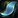 Deepgrove Petal, 1x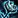 Deepgrove Rose |
| Mining | 5x 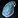 Slab of Slate 1x Erosion Polished Slate |
| Skinning | 5x |
Treatises
Treatises grant +1 Knowledge Point each week. If you're a Scribe with 30 points in the Pursuit of Knowledge specialization, your own Treatise will give you +2 Knowledge instead.
To get a Treatise, you need to submit a Public Crafting Order since they are bind-on-pickup (BoP). They can be a bit pricey due to reagent costs, but it's an easy way to get extra weekly Knowledge.
Treatises are Warbound, so if you have an alt with Inscription, you can craft them and send them to your main.
Darkmoon Faire Profession Quests (Monthly)
Darkmoon Faire Profession Quests are monthly, not weekly, but I thought it was worth mentioning them here.
The Darkmoon Faire event happens once a month, starting at 00:01 on the Sunday before the first Monday of each month. During this event, you can complete quests for each of your professions. These quests grant +2 skill points and +3 Knowledge Points.
For more details about these quests, check out my Darkmoon Faire Guide:
Darkmoon Faire Profession Quests
Knowledge Point Catch-up
If you start late in War Within or miss some weeks, you can still catch up. Crafting professions can slowly close the gap with players who started on Day 1, but it takes time. Gathering professions can catch up much faster.
Crafting Professions
Crafters get extra Knowledge Points from Patron Crafting Orders. Each day, you'll receive three catch-up Crafting Orders, with each one rewarding +1 Knowledge (e.g.,  Flicker of Alchemy Knowledge).
Flicker of Alchemy Knowledge).
This adds up to an extra +3 Knowledge per day.
Mining, Herbalism and Skinning
Gatherers earn extra Knowledge after receiving their Weekly Knowledge Drops. Each catch-up point gives +1 Knowledge, and the amount you receive depends on how far behind you are.
You need to complete the weekly quest from your trainer before you can start earning catch-up points.
These do not have a weekly cap - you can keep earning them until you're fully caught up.
- Mining:
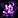
Null Sliver - Herbalism:
 Deepgrove Roots
Deepgrove Roots - Skinning:
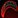
Razor Talon
Enchanting Knowledge Catch-Up
Enchanters can earn extra Knowledge Points by Disenchanting. After getting all your Weekly Knowledge Points, you'll start looting 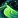
To make Shimmering Dust start dropping, you must first complete your weekly Enchanting tasks:
- Trainer weekly quest
- Disenchant items until you get the 5x blue and 1x purple weekly Knowledge Points
- Loot the 2 weekly item from treasures: Crystalline Repository, Powdered Fulgurance (e.g., Dirt Piles on the Isle of Dorn)
Once those are done, Shimmering Dust will begin to drop from disenchanting eligible items. Just like gathering professions, these do not have a weekly cap - you can earn them until you're caught up.
Shimmering Dust Drop rate:
I only tested a few hundred disenchanting attempts, but the results should be close enough to give you a good idea of the drop rates:
- Greens: ~10%
- Blues: ~50%
- Epics: Always drop 1 (100%).